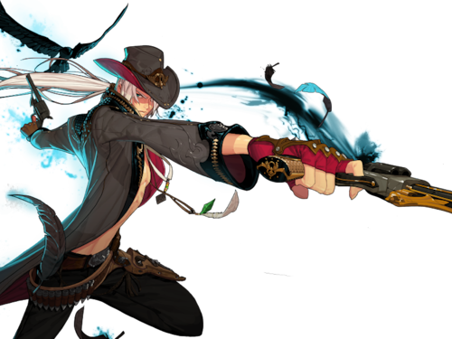

앞서 말했듯이 던파는 혼자서 사냥만 하는 게임이 아닙니다
다수의 사람들과 공동체를 이루어서 플레이를 하죠

최대 20명이 같이 가기도 하는 파티위주의 게임에서 캐릭터의 특성을 알아보려고 합니다
이외에도 파티관련 팁들이 있으니 참고해주세요!!

파티란?

무조건 데미지가 높다고해서 파티가 클리어되진 않습니다!
던전내에는 최대 4명이 한 파티를 이뤄서 갈 수 있고,
4명의 파티원들은 각각 개인별 포지션이 정해져 있죠
누군가는 <'순수하게 딜'만 하고
누군가는 파티원이 더 큰 데미지를 내기 위해 '시너지'를 내주고
또 누군가는 파티원이 편하게 클리어하도록 '전폭적으로 서포트'를 해줍니다
이렇게 나뉘어진 포지션에서 뭐가 뭔지 모르겠다고요? 지금부터 각 포지션에 대한 설명을 귀에 쏙쏙 들어오게 해주죠

퓨어 딜러
순수하게 데미지만 넣는 포지션

퓨어 딜러는 오로지 데미지만 넣습니다
이 때문에 몬스터가 죽고 사는 것도 퓨어딜러에게 달렸기 때문에 성패도 퓨어 딜러의 손에 달려 있죠
던파에서 대부분의 직업들이 퓨어 딜러에 속하고 퓨어 딜러 중에서도 딜을 넣는 방식, 속성에 따라 나뉘기도 합니다
지속적으로 딜을 넣는 '지딜', 순간적으로 스킬을 퍼 붓는 '순딜', 한방 한방 묵직하게 큰 딜을 넣는 '폭딜'로 나뉘어지죠
인구 수가 많아서 취직이 힘듦...크흠....
시너지
팀에서 다양한 역할을 맡는 포지션
시너지는 파티원에게 이로운 버프를 주거나 상대방에게 디버프를 부여합니다
그와 동시에 데미지를 넣거나 몬스터를 홀딩, 혹은 아군을 지켜주는 등 다양한 역할을 도맡아서 합니다
퓨딜에 비해서 인구수가 적지만 파티의 50%의 지분을 차지할 정도로 입지가 상당히 좋습니다
인구수가 많은 퓨딜보다 좋습니다
시너지를 하면서 몬스터를 홀딩하는 '시너지 홀딩',
시너지를 하며 딜을 넣는 '시너지 딜러', 또 시너지를 하면서 다양한 버프 및 아군을 지키는 '시너지 유틸'로 나뉘어 집니다.
저는 퓨딜보다 더 인식이 좋고 더 많이 찾는 시너지 캐릭터를 먼저 키워보시는 것을 추천드립니다
버퍼
아군에게 보호하면서 강하게 만들어주며 서포트해주는 포지션

버퍼는 아군을 강력하게 만들면서 보호해주며 파티를 이끌어주는 포지션입니다
아군이 죽어도 살리고, 강력하게 만들어 클리어 시간을 줄이거나, 체력이 부족한 아군을 치료하고 방어력을 올리는 든든한 존재입니다
문제는 이런 버퍼를 맡은 직업이 던파 59개의 직업중
단 2개 라는 것이 문제점이죠
그 어느 직업보다 인구수가 많지만 그렇다고 해서 모든 파티를 커버할수는 없죠
버퍼를 필수적으로 데려가야하는 구조에서 돈을 주면서까지 구하는 와중에 버퍼의 인구수를 늘리거나 다른 대책을 세우지 않으면 의존도가 높아져 썩 미래가 밝지 않습니다
그러니 지금 당장하세요 롸잇나우